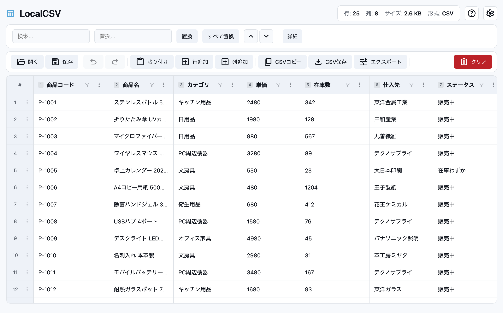

LocalCSV（ロカシー）
制約環境専用のCSV実務エディタ
制約環境でも、
CSV編集を
"実務レベル"に。
インストール不要。外部送信なし。
メモ帳ではつらいCSV編集を、表形式で速く安全に。
"開ける"だけではなく、
"壊さず、見やすく、速く直せる"
ためのCSVエディタです。

こんなCSV編集、まだ続けますか？
便利なCSVツールはあっても、現場では使えないことがあります。
その結果、メモ帳や汎用エディタで、時間をかけて直すしかない。
LocalCSV
は、そんな制約環境のために作った実務用ツールです。
.exe を入れられない
便利なCSVツールがあっても、現場のルールで導入できない。
外部サイトにアップできない
業務データだから、Webツールにそのまま渡せない。
メモ帳だと列が見づらい
どの列を直しているのか分かりづらく、確認にも時間がかかる。
一括修正が怖い
置換やコピペで、思わぬ列ずれや壊れ方をすることがある。
少し直すだけで時間が溶ける
10行だけ修正したいのに、全体を目で追うしかない。
問題は、CSVツールがないことではありません。
"使えるツールが、現場で使えないこと"です。
LocalCSV は、無料ツールとの機能勝負ではなく、
"制約環境でも使いやすいこと" を最優先に考えています。
| 手段 | よくある問題 |
|---|---|
| 外部Webツール | CSVを持ち出せない |
| サードパーティexe | 導入許可が通りにくい |
| メモ帳・汎用エディタ | 表で見えず、修正ミスが起きやすい |
| Excel頼みの運用 | 文字コードや崩れが不安 |
だから必要なのは、高機能すぎるCSVツールではありません。
制約環境でも使いやすい、現実的なCSV実務エディタです。
そのために作ったのが、
LocalCSV（ロカシー）です。
LocalCSV
は、制約環境専用のCSV実務エディタです。
ブラウザで動作し、CSVを表形式で開いて、そのまま編集できます。
検索、絞り込み、一括置換、保存まで、実務で本当に使う機能に絞りました。
見やすい
表形式で確認しやすい
列と行が見えるので、メモ帳より直感的に編集できます。
速い
必要なところだけ素早く直せる
検索、絞り込み、一括修正で、地味な手作業を減らします。
安心
保存前に確認できる
変更箇所を見比べながら進められるので、壊しにくい運用を作れます。
実務で効く機能だけを、先に入れました。
表形式編集
CSVをそのまま表で編集
行と列を見ながら修正できるので、対象箇所を追いやすくなります。
検索・絞り込み
必要な行だけ見つけて直せる
全部を目で追わずに、対象データだけを絞って編集できます。
一括置換
同じ修正をまとめて反映
同じ値の修正を何度も繰り返す必要がありません。
並び替え
列の値で昇順・降順に並び替え
任意の列を基準にデータを並び替えて、必要な行を見つけやすくできます。
CSV保存・エクスポート
文字コードや形式を選んで保存
CSV・TSV・JSONなど多形式に対応し、文字コードや改行コードを指定して保存できます。
文字コード対応
現場で起きやすい文字化け事故を減らす
文字コードを意識した読み込み・保存ができます。
使い方は、開く → 見つける → 直す → 保存 の4ステップ。
CSVを開く
ファイルを読み込むだけで、表形式で内容を確認できます。
必要な箇所を見つける
検索や絞り込み機能を使って、対象データだけを素早く見つけます。
データを直す
セルを直接クリックするか、一括置換を使ってデータを効率よく修正します。
保存・エクスポートする
編集が終わったら、文字コードや出力形式を選んで保存します。
ブラウザですぐに試すか、HTMLを保存してオフラインでも使えます。
こういう場面で、LocalCSV はすぐ効きます。
マスタCSVの名称だけまとめて直したい
対象データを絞って、一括で更新できます。
数百行の中から該当行だけ修正したい
検索とフィルタで、必要な行だけを見つけられます。
保存前に変更箇所を確認したい
差分で見比べながら進められるので、不安を減らせます。
メモ帳編集の確認時間を減らしたい
表形式で見えるだけでも、確認の負担が大きく変わります。
1回10分の短縮でも、月8回なら80分。
地味なCSV作業ほど、毎月の差が大きくなります。
業務データを扱うからこそ、安心して使える設計に。
LocalCSV は、制約環境での利用を前提に考えています。
業務データを扱う場面でも、できるだけ不安なく使えるように設計しています。
ブラウザで動作します
ファイルはローカルで処理します
CSV内容を外部サーバーへ送信しません
アカウント登録なしで試せます
推奨ブラウザと動作条件を明記します
※ 実際の動作条件は、ご利用環境に合わせて事前にご確認ください。
よくある質問
社内PCでも使えますか？
ブラウザ上で動作します。ただし、実際の利用可否は社内ルールや環境に依存するため、まずはご自身の環境でご確認ください。
CSVは外部に送信されますか？
送信しない設計を前提にしています。CSV内容はローカルで処理する想定です。
Excelは必要ですか？
必要ありません。ブラウザだけで利用できます。
どんな人に向いていますか？
制約環境でCSVを編集する必要がある人に向いています。特に、メモ帳や汎用エディタでの修正に時間がかかっている人におすすめです。
Shift_JISのCSVも扱えますか？
はい。Shift_JIS（CP932）、EUC-JP、ISO-2022-JP（JIS）、UTF-16 LE/BEに対応しています。読み込み時に自動判別し、保存時にも文字コードを指定できます。
すべて無料ですか？
はい。個人開発のツールとして、全機能を無料で公開しています。